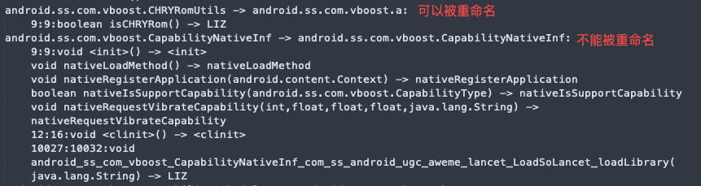

本文为作者工作内容外发文章的转载 原文链接
本文作者：冯瑞；廖斌斌；刘丰恺
前言
应用安装包的体积会显著影响应用的下载速度和安装速度，按照 Google 的经验数据，包体积每增加 1M 会造成 0.17%的新增折损。抖音的一些实验也证明了包体积会显著影响下载激活的转化率。
Android 的安装包是 APK 格式的，在抖音的安装包中 DEX 的体积占比达到了 40%以上，所以针对 DEX 的体积优化是一种行之有效的包体积优化手段。
DEX 本质上是由 Java/Kotlin 代码编译而成的字节码，因此，针对字节码进行业务无感的通用优化成为我们的一个探索方向。
优化结果
终端基础技术团队和抖音基础技术团队在过去的一年里，利用 ReDex 在抖音包体积优化方面取得了一些明显的收益，这些优化也被同步到了其他各大 App 上。
在抖音、头条和其他应用上，我们的优化对 APK 体积的缩减普遍达到了 4%以上，对 DEX 体积的缩减则可以达到 8% ~ 10%
优化思路
在 android 应用的构建过程中，Java/Kotlin 代码会先被编译成 Class 字节码，在这个阶段 gradle 提供了 Transformer 可以进行字节码的自定义处理，很多插件都是在这个阶段处理字节码的。然后，Class 文件经过 dexBuilder/mergeDex 等任务的处理会生成 DEX 文件，并最终被打进安装包中。整个过程如下所示：
所以，针对字节码的优化是有 2 个时机可以进行的:
- 在 transformer 阶段对 Class 字节码进行优化
- 在 DEX 阶段对 DEX 文件进行优化
显然，对 DEX 进行优化是更理想的一种方式，因为在 DEX 文件中，除了字节码指令外，还存在跨 DEX 引用、字符串池这样的结构，针对这些 DEX 格式的优化是无法在 transformer 阶段进行的。
在确定了针对 DEX 文件进行优化的思路后，我们选择了 facebook 的开源框架 ReDex 作为优化工具，并对其进行了定制开发。
选择 ReDex 的原因是它提供了丰富的基础能力，ReDex 的基础能力包括：
- 读写及解析 DEX 的能力，同时可以在一定程度上读取并解析 xml 和 so 文件
- 解析简单的 proguard keep 规则并匹配类/方法/成员变量的能力
- 对字节码进行数据流分析的能力，提供了常用的数据流分析算法
- 对字节码进行合法性校验的能力，包括寄存器检查、类型检查等
- 一系列的字节码优化项，每项优化称为一个 pass，多个 pass 组成 pipeline 对 DEX 进行优化
我们基于这些能力进行了定制和扩展，并期望最终建立完善的优化体系。
优化项
在抖音落地的优化项，包括 facebook 开源的优化和我们自研的优化，从其出发点来看，可以大致分为下面几种:
- 通用字节码优化：通常意义下的编译优化，如常量传播、内联等，一般也可在 Transformer 阶段实现
- DEX 格式优化：DEX 中除了字节码指令外，还包括字符串池、类/方法引用、debug 信息等等，针对这些方面的优化归类为 DEX 格式优化
- 针对编程语言的优化：Java/Kotlin 的一些语法糖会生成大量字节码，可以对这些字节码进行针对性的分析和优化
- 提升压缩率的优化：将 DEX 打包成 APK 实质上是个压缩的过程，对 DEX 内容进行针对性的优化可以提升压缩率，从而产生体积更小的 APK
这几种优化没有明确的标准和界线，有时一个 Pass 会涉及到多种，下面详细介绍一下各项优化。
通用字节码优化
ConstantPropagationPass
该 Pass 实际上包含了常量折叠和常量传播。
常量折叠是在编译期简化常量的过程，比如
y = 7 - 14 / 2
--->
y = 0
常量传播是在编译期替代指令中已知常量的过程，比如
int x = 14;
int y = 7 - x / 2;
return y * (28 / x + 2);
--->
int x = 14;
int y = 7 - 14 / 2;
return (7 - 14 / 2) * (28 / 14 + 2);
上面的例子经过 常量折叠 + 常量传播优化后就会简化为
int x = 14;
int y = 0;
return 0;
再经过死代码删除就可以最终变为return 0。
具体的优化过程是：
- 对方法进行数据流分析，主要针对 const/move 等指令，得出一个寄存器在某个位置可能的取值
- 根据分析的结果，进行指令替换或指令删除，包括:
- 如果值肯定是非空的，可以将对应的判空去掉，比如 kotlin 生成的 null check 调用
- 如果值肯定为空，可以将指令替换为抛空异常
- 如果值肯定让某 if 分支走不到，可以删除对应的分支
- 如果值是固定的，可以用 const 指令替换对应的赋值或计算指令
一个方法经过 ConstantPropagationPass 优化后，可能会产生一些死代码，比如例子中的int y = 0，这也为后续的死代码删除创造了条件。
AnnoKillPass
该 Pass 是用来移除无用注解的。注解主要分为三种类型:
- SOURCE： java 源码编译为 class 字节码就不可见，此类注解一般不用过于关注
- CLASS： 字节码通过 dx 工具转成 DEX 就不可见，代码运行时不需要获取信息，所以一般来说也不需要关注，实测发现部分注解仍然存在于 DEX 中，这部分注解可以进行优化
- RUNTIME： DEX 中仍然可见，代码运行中可以通过 getAnnotations 等接口获取注解信息，但是随着业务的迭代，可能获取注解信息的代码已经去掉，注解却没有下掉，这部分注解会被 ReDex 安全的移除
除此之外，实际上为了支持某些系统特性，编译器会自动生成系统注解，虽然注解本身是 RUNTIME 类型，但是可见性是VISIBILITY_SYSTEM
- AnnotationDefault : 默认注解，不能删除
- EnclosingClass : 当前内部类申明时所在的类
- EnclosingMethod : 当前内部类申明时所在的方法
- InnerClass : 当前内部类名称
- MemberClasses : 当前类的所有内部类列表
- MethodParameters : 方法参数
- Signature : 泛型相关
- Throws : 异常相关
举例说明
编译器生成 1MainApplication$1这个匿名内部类，带有 EnclosingMethod 和 InnerClass 注解
系统提供以下接口获取类相关的信息，就是通过分析相关的系统注解来实现的
- Class.getEnclosingMethod
- Class.getSimpleName
- Class.isAnonymousClass
- ….
如果代码中不存在使用这些接口获取类信息的逻辑，就可以安全的移除这部分注解，从而达到缩减包大小的目的。
RenameClassesPass
该 Pass 通过缩减类名的字符串长度来减小包体积
比如把类名从La/b/c/d/e;改为LX/a;，可以类名字符串的长度，从而达到包大小缩减的目的。实际上 Proguard 本身已经提供类似的功能: -repackageclasses 'X'，效果如下:
但是-repackageclasses 'X'的处理会影响 ReDex 的 InterDexPass 的算法逻辑(InterDexPass 可以参考下文)，导致收益缩减
- 收益测试
- - Proguard
-repackageclasses 'X'收益: 600K+- Redex
InterDexPass收益: 400K+ - 同时应用 Proguard
-repackageclasses 'X'和 RedexInterDexPass收益: 40K+
- Redex
本质原因在于 Proguard 重命名后，影响了 InterDexPass 函数引用权重分配，导致 InterDex 收益被回收
- 解决方案
- - InterDexPass 深入分析原理，优化权重算法
- 先执行 InterDexPass，后执行类似 Proguard 的
-repackageclasses 'X'
- 先执行 InterDexPass，后执行类似 Proguard 的
权重算法优化相对来说比较复杂，同时存在众多不可确定性，比如潜在的跟其他优化的冲突，所以我们采取了第二种解决方案。
这里需要解决的一个关键点在于如何确定一个类名是否可以被安全的重命名，我们采取了一个比较取巧的方式，ReDex 会分析 Proguard 传递上来 mapping.txt 文件，只要我们保持跟 Proguard 类重命名优化一样的处理策略，就不会引发反射/native 调用/序列化等一系列问题。

但是执行起来还是碰到各种千奇百怪的问题，比如 Signature 系统注解失效问题。Signature 注解的内容是非标准的类名格式，所以类重命名后简单回写字符串或者更新 Type 类型会导致 Signature 注解失效，最后通过深入解析 Signature 格式规避了这个问题。
StringBuilderOutlinerPass
该 Pass 是针对 StringBuilder 的 CallSites 进行分析缩略的优化，与死代码删除搭配使用可以有不错的优化效果。
为何要优化 StringBuilder 呢？在 Java 的代码开发过程中，字符串操作几乎是我们最经常做的一件事情，无论是实际处理字符串拼接还是各种不同数据类型之间的拼接操作。而这些拼接操作都会被 Java 的 de-sugar 优化为 StringBuilder 操作。比如：var log = "A" + 1 + "B" + 1.0f + other_var; 会被优化为：
StringBuilder builder = new StringBuilder();
builder.append("A"); builder.append(1);
builder.append("B"); builder.append(1.0f);
builder.append(other_var);
builder.toString();
因此我们对 StringBuilder 的所有 Callsites 进行分析，在最好情况下多个方法调用可以被优化为一个调用，这个方法是一个 outline （外联）方法，具体的参数拼接和 toString 被隐藏在函数内部：
invoke-static {v1, v2, v3} Outline;.bind:([Ljava/lang/Object)Ljava/lang/String;
优化步骤可以被简单的分为如下几个步骤：
生成一个泛型的外联方法、以及数个特定参数的方法：我们可以认为生成的方法大概是这样的
@Keep public static String bind(Object... args) { StringBuilder builder = new StringBuilder(); for (int i = 0; i < args.length ; i++) { builder.append(args[i]); } return builder.toString(); }收集
StringBuilder的 CallSites ：通过抽象解释和不动点分析，分析所有的 StringBuilder 操作，对 append、new-instance、和 init 方法分类。判断每次 append 的参数是不是 immutable 操作，如果增加的 insn 少于减少的 insn 即会减少代码，就对这里进行处理。生成外联方法调用：由于我们使用了泛型方法来接受参数，因此我们要对基础类型生成 ValueOf 的转换操作、并且删除
append方法前为了防止被错误优化我们还需要插入 move 指令来 copy 原有参数（这些 move 指令会被后续优化正确删除）、如果参数个数还在我们生成的特定 outline 方法范围内我们就可以使用特定方法来生成外联函数，其余的将使用泛化的外联来接受。
DEX 格式优化
InterDexPass
该 Pass 是针对跨 DEX 引用的优化。
跨 DEX 引用是指当一个 DEX 需要“使用”到另一个 DEX 中的类/方法/变量时，需要在本 DEX 中保存一份对应的类/方法/变量的 id，如果 2 个 DEX 用到了相同的字符串，那么这个字符串在 2 个 DEX 都需要进行定义。所以，改变类/方法/变量和字符串在 DEX 中的分布，可以减小引用的数量，从而减小 DEX 的体积。从原理中也可以看出，该优化对单 DEX 的应用是无效的。
从上图可以看到，进行类重排后，DEX0 的类引用和方法引用数量都减少了，DEX 的体积也会因此减小。
具体的优化过程是：
- 收集每个类涉及的所有引用，按照引用数量和类型计算出类的权重
- 根据权重计算出每个类的优先级
- 根据优先级选取一个类放入 DEX 中，然后调整剩余类的优先级，重复此步骤直到所有类都被处理
ReBindRefsPass
该 Pass 是针对方法引用的优化，其原理同 InterDexPass。
在字节码中，invoke-virtual/interface指令需要一个方法引用，在很多情况下，这个引用指向的是子类或者实现类的引用，把这个引用替换成父类和接口的方法引用不会影响运行时逻辑，同时会减少 DEX 中方法引用的数量。在生成 DEX 的时候，方法引用的 65536 限制通常是最先遇到的瓶颈，该优化也可以缓解这种情况。
如上图所示，优化前 caller 方法的 invoke 指令使用的是子类引用，其伪指令如下所示，需要用到 2 个引用
new-instance v0, Sub1
invoke-virtual v0, Sub1.a()
new-instance v1, Sub2
invoke-virtual v1, Sub2.a()
优化后，invoke 指令都指向其父类应用，2 个引用可以合并为 1 个，减少了 DEX 中的引用数量
new-instance v0, Sub1
invoke-virtual v0, Base.a()
new-instance v1, Sub2
invoke-virtual v1, Base.a()
针对编程语言的优化
KotlinDataClassPass
该 Pass 是对 Kotlin data class 的优化，基本思路是对 data class 的生成代码进行精简。
- 解构声明优化
Kotlin 中存在解构声明这种语法，可以更方便的创建多个变量，基本用法如下
data class Person(val name: String，val age: Int)
val (name，age) = person("John"，20)
kotlinc 会为Person类生成 get 方法和 componentN 方法，如下是伪代码表示
Person {
String name;
Int age;
getName(): String { return name; }
getAge(): Int { return age; }
component1(): String { return name; }
component2(): Int { return age; }
}
// 解构声明编译为
val name = person.component12 1()
val age = person.component2()
可以看到，get 和 component 的逻辑是一样的，所以在编译期，可以进行全局的匹配，用 get 替换掉 component，然后再删除 component。
- toString 等生成方法优化
kotlin compiler 为 data class 生成的 toString 具有相似的代码结构，因此可以生成一个辅助方法，然后在所有 data class 的 toString 方法中调用这个辅助方法，即外联，从而减少指令数量。
equals 和 hashCode 也可以进行类似优化，但是风险相对较高，因此单独为这些优化配置了开关，业务方可以视情况开启。
提升压缩率的优化
RegAllocPass
DEX 及其他文件经过压缩打成 APK，如果能通过改变 DEX 的内容来提升压缩率，那么也会减小最终的包体积。RegAllocPass 就是通过重新分配寄存器来提升压缩率的。
dx 生成 DEX 时使用的是线性寄存器分配算法，其基本步骤是进行存活变量分析，然后计算出每个变量的活跃区间，再根据活跃区间依次为变量分配寄存器，超出活跃区间的寄存器可以进行再分配，其优点是运行速度快，但结果往往不是最优的。
比如下面的代码，dx 分配了 6 个寄存器，v0 ~ v5
public static double calculateLuminance(@ColorInt int color) {
final double[] result = getTempDouble3Array();
colorToXYZ(color，result);
return result[1] / 100;
}

相对的，ReDex 使用了图着色算法进行寄存器分配，基本步骤是进行存活变量分析，并构建冲突图，冲突图的每个节点是一个变量，如果 2 个变量可以同时存活，就在两个节点之间建立边，最后为冲突图着色，每个颜色代表一个寄存器，着色完成即寄存器分配完成。着色法相对更慢，结果一般更优。对上面同样的代码，着色法使用了 4 个寄存器，v0 ~ v3。
DEX 中的方法使用的寄存器越少，其内容重复率就越高，压缩率也会更大，从而减小了包体积。
抖音落地
抖音是字节跳动规模最大、运行环境复杂度最高的应用之一。在 ReDex 落地初期，由于对复杂度估计不足，在独立灰度和全量灰度期间引起了一些问题，在解决问题的过程中，我们也逐步形成了一套迭代流程以保证优化的稳定性。下面介绍一下我们遇到过的典型问题及当前的迭代流程。
遇到的问题
兼容性问题
一般来说，只要按照字节码规范进行优化，就不会有兼容性问题，因为 dalvik/art 也是按照规范去校验和运行字节码的，即使进行了错误的优化，引起的问题也应该是共性问题。但很多事都有例外，ReDex 就在某品牌手机的部分 Android 5.x 的机型上遇到了问题。
从 log 和一些 hook 来看，某品牌手机对 5.x 的 art 做了大量的魔改，可以推断其魔改存在一些问题，导致对正确的字节码的校验和运行也可能出现问题。一个可能的原因是：在 ReDex 进行优化时，会对一些方法体的指令顺序进行重排，这种重排是不影响方法的逻辑的，但是可能会改变一部分指令，魔改后的 art 在校验这样的方法时可能会报 verify error，引起 crash。
最终通过黑名单配置跳过了这些方法的优化规避了问题，在后续的优化过程中，没有再遇到类似的问题。
复杂场景优化问题
抖音业务复杂，代码写法多样，给静态分析和优化增加了一些难度，也更容易遇到问题。下面是 2 个典型问题：
空方法优化问题 代码中可能存在一些空方法，排除掉反射和 natvie 调用等场景后，剩下的空方法应该是可以删除的。但是在做优化时，却遇到了 crash，如以下代码
object XXPreloadSDKHelper { init { initXXPreloadSDK() } fun fakeInit() { } } // 初始化任务 public class XXInitTask implements Runnable { @Override public void run() { XXPreloadSDKHelper.INSTANCE.fakeInit(); } }
在初始化代码中调用fakeInit，它是一个空方法，调用它的目的是触发XXSDKHelper类加载从而执行init语句块，如果删除了这个空方法，就会导致初始化未执行，在后续的流程中抛空指针。
- 复杂反射问题
对于 Class.forname(…)等简单的反射用法，静态分析是可以分析出来的，但是对一些经过字符串拼接或者嵌套之后的反射，静态分析很难分析到。因此，对可能会被反射的代码进行优化需要非常小心，通常来说，匿名内部类是不会通过反射调用的，基于此前提，我们进行了匿名内部类的重命名优化，但是在灰度后，发现某些第三方 SDK 会通过复杂的运行时逻辑对匿名内部类进行了反射调用，最终导致了 ClassNotFoundError。
复杂场景的优化问题有些是业务代码不规范造成的，但更多的是优化前提（空方法可以删除/匿名内部类不会被反射）不成立所导致，所以在进行优化时首先需要对假设进行谨慎的验证。
迭代流程
为了减少稳定性问题，我们总结了 ReDex Pass 的迭代流程。
在对一项 Pass 有了初步构思后，组内会进行可行性讨论，如果理论上可行就进入开发和验证阶段，之后同步进行至少 2 轮的独立灰度验证和业务方 Pass 评审，最后进行全量灰度验证。其中任意一个环节发现问题，都会重新进行整个流程。
通过这个流程，我们大大减少了稳定性问题遗留到灰度阶段的可能，在不断完善迭代流程的同时我们也在探索通过加强单元测试、自动化测试等方式来提升质量。
后续规划
ReDex 仍然在持续迭代中，未来我们会在以下几个方向继续进行深入探索：
- 更多包体积优化的探索和迭代，同时探索字节码优化在性能提升方面的可能性
- 提升字节码质量
- 更加严格的合法性校验；ReDex 之前已经检测出若干自定义插件和 proguard 的问题，将问题拦截在了编译期，后续会继续提升该能力
- 建立更加完善的质量验证体系；ReDex 作为编译期的全局字节码优化方案，如果保证优化后的字节码质量一直是个痛点，我们会继续在单元测试、自动化测试等方向探索质量提升的手段
- 增加编译期监控，更加快速便捷的解决编译期字节码问题，提升接入体验
- 其他应用方向探索；如方法插桩、某些条件下的死代码扫描等。
加入我们
字节跳动终端技术团队(Client Infrastructure) 是大前端基础技术的全球化研发团队（分别在北京、上海、杭州、深圳、广州、新加坡和美国山景城设有研发团队），负责整个字节跳动的大前端基础设施建设，提升公司全产品线的性能、稳定性和工程效率；支持的产品包括但不限于抖音、今日头条、西瓜视频、飞书、瓜瓜龙等，在移动端、Web、Desktop 等各终端都有深入研究。
就是现在！客户端／前端／服务端／端智能算法／测试开发 面向全球范围招聘！一起来用技术改变世界，感兴趣请联系 fengrui.0@bytedance.com，邮件主题 简历-姓名-求职意向-期望城市-电话。
抖音 Android 基础技术团队是一个深度追求极致的团队，我们专注于性能、架构、包大小、稳定性、基础库、编译构建等方向的深耕，保障超大规模团队的研发效率和数亿用户的使用体验。目前北京、上海、杭州、深圳都有大量人才需要，欢迎有志之士与我们共同建设亿级用户 APP！
可以进入字节跳动招聘官网查询「抖音基础技术 Android」相关职位，或者联系邮件：xiaolin.gan@bytedance.com ，直接发送简历内推或者咨询相关信息！